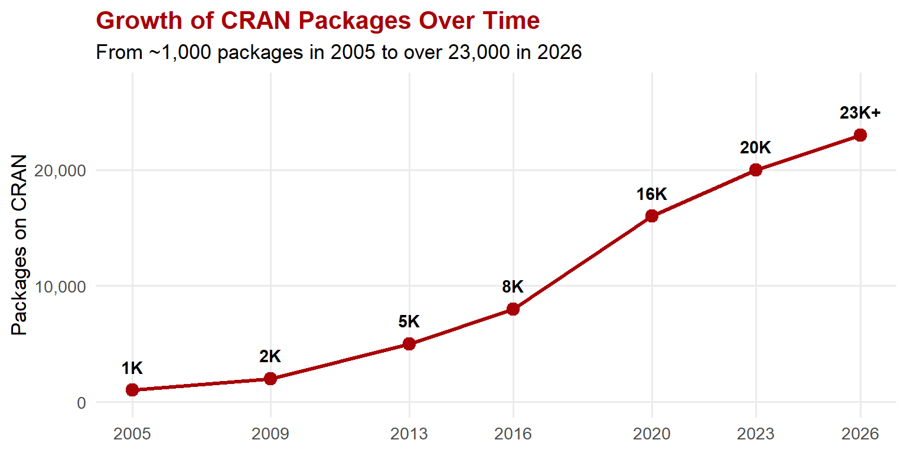

1 Introduction to R
Alright, let’s get the big question out of the way first: What is R?
R is a programming language built specifically for working with data – crunching numbers, running analyses, and making charts so beautiful your manager will think you hired a graphic designer. If Excel is the reliable sedan you drove in college, R is the Tesla you’re about to upgrade to. Same basic job (getting you from point A to point B), but a wildly different experience once you’re behind the wheel.
R was created by two professors – Ross Ihaka and Robert Gentleman – at the University of Auckland in New Zealand. (Yes, the same country where they filmed Lord of the Rings. Clearly a land of epic creations.) They started the project in 1992, and it’s based on an older language called S, which was built by John Chambers at Bell Labs. S is now owned by TIBCO. Both R and S were originally built by statisticians, for statisticians – but don’t let that scare you. These days, R is used by marketing analysts tracking campaign performance, finance teams modeling risk, consultants building client dashboards, and basically anyone whose job involves making sense of messy data. Sound familiar?
The official R website is here: https://www.r-project.org

1.1 Why Use R? (Or: Why Can’t I Just Stick with Excel?)
Look, we need to talk. Excel is great. We all love Excel. You’ve been using it since high school, and it has served you well. But at some point, you’re going to hit a wall – maybe you have 500,000 rows of customer transaction data, or you need to run the same weekly sales report every Monday, or your director wants a visualization that doesn’t look like it was made two decades ago. That’s where R comes in.
Here are 9 reasons why R is worth adding to your toolkit:
It’s free. Like, actually free. No license fees, no subscriptions, no “your 14-day trial has expired, please enter a credit card” pop-ups. As a student already paying for textbooks, meal plans, and an unreasonable amount of coffee, you’re welcome. Because R is open source, thousands of people around the world contribute code and tools that you can use instantly – no purchasing department approval required.
Your work is reproducible. Ever spend an hour clicking through menus in some software, get your results, and then your professor says “can you run that again with last quarter’s data?” In R, your entire analysis is saved as a script – basically a set of instructions. Change one line, hit run, done. It’s like having a recipe instead of trying to remember what you threw in the pot last Tuesday.
R is always on the cutting edge. New statistical methods and data science techniques show up in R before they appear in almost any other software. If something is new and exciting in the analytics world, R probably already has it. Your future employer will notice.

Figure 1.1: Key milestones in CRAN package growth
Source: Muenchen, Robert A, The Popularity of Data Analysis Software.
The graphics are stunning. Seriously, the charts and visualizations you can create in R will make your PowerPoint presentations look like they belong in a Fortune 500 boardroom, not a middle school science fair. The ggplot2 package in particular is the gold standard – organizations like the BBC, The New York Times, and FiveThirtyEight use R for their data graphics. Imagine casually dropping that into a job interview. “Oh, I use the same visualization tools as the New York Times. No big deal.”
Updates are a breeze. Everything is distributed over the internet. No CDs, no USB drives, no submitting a help desk ticket and waiting three weeks for IT to install something. You download what you need, when you need it.
It works on everything. Mac, Windows, Linux – R doesn’t care what computer you have. Your group project members can all use different machines and still run the same code. (If only the rest of group projects were that easy.)
It plays well with others. R can connect to databases, read Excel files, pull in CSV data, handle SPSS files – basically whatever format your data lives in, R can probably import it. That random
.xlsxfile your internship supervisor emailed you at 5pm on a Friday? R’s got you.It has been featured in The New York Times – and keeps making headlines. Ashlee Vance’s 2009 NYT article first brought R to mainstream attention. Since then, the BBC built a custom R package (
bbplot) for all their data journalism graphics, The Economist uses R for its charts, and in December 2025, multiple outlets – InfoWorld, Slashdot, FlowingData – covered R’s return to the TIOBE top 10.The community is incredible. This might honestly be the best reason. R has more than 2 million users worldwide (per the R Consortium), and a huge number of them genuinely enjoy helping beginners. Got stuck at midnight before a deadline? Post a question online and someone – probably in a different time zone where it’s a perfectly reasonable hour – will likely answer within hours. It’s like having a giant study group that never sleeps. That spirit of people helping strangers for free — sharing code, answering questions, building tools for the common good — maps pretty well onto Gonzaga’s mission of building professional communities rooted in solidarity and service.
Now, here’s the one thing that makes people nervous: R uses a command line. You type code instead of clicking buttons. I know, I know – that might sound intimidating if you’ve never programmed before. But here’s the good news: you don’t have to stare at a scary blank terminal. There’s a fantastic program called RStudio (made by a company now called Posit) that gives you a friendly, modern workspace with helpful features like auto-complete, built-in help files, and a window to see your plots right next to your code. It’s the difference between building furniture with just a hammer and building it with a fully equipped workshop. We’ll get you set up with RStudio in the next chapter – it’s painless, I promise.
1.1.1 Where R Stands in 2026
As of early 2026, R ranks #8 on the TIOBE Index (its highest position since 2020), #5 on the PYPL Index, and #5 on IEEE Spectrum (2024). It is used by 4.9% of developers in the 2025 Stack Overflow survey. R ranks lower in general-purpose developer surveys because it is a domain-specific language – but in statistics, data science, and business analytics, it is one of the top two tools alongside Python.
Robert Muenchen has been tracking the popularity of data analysis software for years, and his regularly updated article is a great read if you’re curious about how R stacks up against SPSS, SAS, Stata, and others. Check it out at https://r4stats.com/articles/popularity/.
If you want to explore what R can do in specific business fields – marketing analytics, finance, econometrics, supply chain, you name it – the CRAN Task Views page has a massive listing of packages organized by topic. And for the really bleeding-edge stuff, developers often host their latest work on GitHub.
1.2 R – The Environment and Software
Let me give you an analogy that’ll make this click.
Imagine it’s your first day at a new job. Someone hands you a company laptop. Out of the box, it comes with the basics – a web browser, a calculator, maybe Microsoft Notepad. Functional, but not exactly exciting. That’s what R includes built in. It can do a lot right out of the gate: math, basic statistics, simple charts. It’s solid.
But then your manager asks you to build a customer segmentation model, or create an interactive dashboard for the quarterly business review. You need specialized tools. So you go to the app store and download exactly what you need. In R, these specialized tools are called packages – and there are over 23,000 of them (and growing every month). They cover everything from sentiment analysis of Amazon reviews to stock portfolio optimization to mapping sales territories.
Sometimes a package needs other packages to work properly. (Kind of like how some apps require you to update your operating system first.) These are called dependencies, and R handles them automatically – it’ll download whatever supporting software it needs without you having to lift a finger.
And here’s the really cool part: if nobody on the entire planet has written a package for the specific, niche thing you need to do (unlikely, but possible), you can build your own and share it with the world. That’s the beauty of open source – everyone contributes, everyone benefits.
1.2.1 Key Milestones
R has evolved significantly over the years:
-
R 4.0 (2020): Introduced modern defaults (e.g.,
stringsAsFactors = FALSE), making data import less error-prone. -
R 4.1 (2021): Added the native pipe operator
|>, giving base R a feature that tidyverse users had loved for years via%>%. - RStudio renamed to Posit (2022): Reflecting the company’s growing support for Python alongside R.
- tidyverse 2.0 (2023): Added lubridate to the core tidyverse, making date-time handling a first-class citizen.
-
R 4.5 (2025): The current release, which includes the Palmer Penguins dataset built in – a modern, inclusive replacement for the classic
irisdata.
1.3 The Tidyverse
Okay, buckle up, because I’m about to introduce you to something that’s going to make your data life significantly better.
The tidyverse is a collection of R packages that were designed to work together seamlessly. Think of it like this: base R is a kitchen where all the utensils are scattered across random drawers. The tidyverse is that same kitchen after someone from The Container Store organized the whole thing. Everything has a place, everything works together, and you can actually find what you need.
The tidyverse was created primarily by Hadley Wickham – kind of a celebrity in the data world (he has fans, conference talks, the whole deal) – and is maintained by the team at Posit.
Here’s what’s in the toolkit:
- ggplot2: Makes beautiful charts and graphs. This is the package that’ll make your classmates’ and coworkers’ jaws drop during presentations.
-
dplyr: Lets you filter, sort, group, and summarize data. It’s basically what you wish Excel pivot tables were. Seriously – once you use
dplyr, you’ll feel betrayed by pivot tables. - tidyr: Helps you reshape messy data into clean, “tidy” formats. Because real-world data from CRM systems, surveys, and databases is almost always a disaster.
- readr: Reads CSV files and other data formats quickly and cleanly. Perfect for loading that sales report your boss just emailed you.
- purrr: Automates repetitive tasks so you don’t have to copy-paste the same analysis fifty times. (Also, the name is a cat pun. Data scientists are fun at parties, apparently.)
- tibble: A smarter, more user-friendly version of R’s data frame – basically a spreadsheet that lives inside R and behaves itself.
- stringr: Tools for working with text data. Great for cleaning up messy customer survey responses where someone typed “Strongly agrEE” instead of “Strongly Agree.”
- forcats: Helps you work with categorical data – things like “Freshman/Sophomore/Junior/Senior,” product categories, or customer segments.
Installing the whole collection takes one line of code:
install.packages("tidyverse")And loading it into your session is just as easy:
Throughout this book, we’ll use a mix of built-in functions and these add-on packages. The tidyverse gets its own deep dive in Chapters 3 through 17.
Trust me – once you start using the tidyverse, you’ll wonder how you ever lived without it. It’s like switching from a flip phone to a smartphone. Same basic concept, completely different quality of life.
1.4 “But Can’t AI Just Write the Code for Me?”
Fair question. Tools like ChatGPT, Claude, GitHub Copilot, and others can absolutely generate R code. You can type “make me a bar chart of average sales by region” and get working ggplot2 code in seconds. So why bother learning R yourself?
Here’s the honest answer: AI makes R more valuable, not less.
Think about it this way. A calculator can do arithmetic faster than any human alive, but we still teach math – because you need to know whether the answer makes sense. The same logic applies here, except the stakes are higher. An AI can generate a linear regression in two seconds. But if you don’t understand what a regression is, you won’t catch it when the model is wildly overfit, when the residuals scream “this relationship isn’t linear,” or when a lurking confound makes the whole result meaningless. You’ll present garbage to your manager with complete confidence, and that’s worse than presenting nothing at all.
Here’s what actually happens in the workplace:
AI generates code. You decide if the code is right. That requires understanding what
group_by() |> summarize()does, what a p-value means, and why a boxplot might be more informative than a bar chart. You’re the quality-control layer. If you don’t know R, you’re just a middleman forwarding AI output to your boss – and middlemen get automated away.AI is fast but not thoughtful. It doesn’t know your business context. It doesn’t know that “Region” in your company’s data actually has a fourth hidden category because someone merged two territories last quarter. It doesn’t know your CEO hates pie charts. Domain knowledge and human judgment are the things that turn raw output into useful insight, and those come from you.
The best AI users are the ones who know the craft. This is the paradox: people who already understand data analysis get dramatically more out of AI tools than beginners do. They write better prompts, catch errors faster, and use AI to accelerate work they already understand. Learning R doesn’t compete with AI – it makes you better at using it.
Interviews and credibility still require understanding. No hiring manager is going to be impressed when you say “I had AI do it.” They’ll ask follow-up questions. “Why did you choose a log transformation?” “What does this coefficient mean?” “Walk me through your methodology.” If you can’t answer, the conversation is over.
The bottom line: learn R and use AI tools. Use AI to speed up boilerplate code, to learn new packages, and to debug annoying errors at midnight. But build your own understanding so that you can steer, verify, and explain. The analysts who thrive in the AI era won’t be the ones who blindly copy-paste generated code – they’ll be the ones who know enough to ask the right questions and catch the wrong answers.